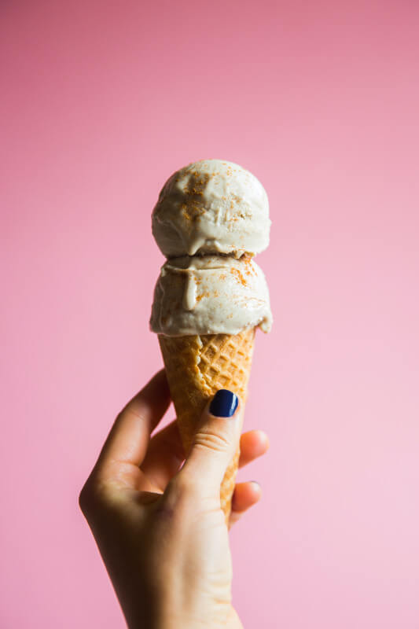

UPSIDE Chicken
Ayam budidaya sel dengan bahan nabati, disajikan di restoran tertentu di California.
English | Italiano | Français | Español | Deutsch | 中文 | 日本語 | Bahasa Indonesia | Português | Русский
Fermentasi presisi memungkinkan produksi protein susu dan telur serta bahan lainnya menggunakan mikroorganisme, seperti ragi atau jamur, alih-alih menggunakan hewan
Seperti daging yang dibudidayakan dan daging nabati, protein yang berasal dari fermentasi lebih baik untuk planet, manusia, dan hewan
Fermentasi presisi dapat mengurangi ketergantungan kita pada peternakan sapi perah industri, serta dampaknya terhadap iklim, lingkungan, dan hewan.

Protein yang dihasilkan identik dengan protein hewani yang diproduksi secara konvensional dan dapat digunakan untuk membuat berbagai macam produk (keju, es krim, susu, mentega, bubuk protein, albumin, dll.)
Penggunaan strain mikroba yang dimodifikasi secara genetik bukanlah hal yang baru, telah digunakan selama beberapa dekade di bidang kedokteran dan makanan untuk memproduksi:
Selain itu, ada banyak makanan fermentasi tradisional:
Tempe, bir, yogurt, kimchi, as inan kubis, dan banyak lainnya

"Domestikasi kedua"
Pertama, kita menjinakkan makroorganisme (hewan dan tumbuhan).
Sekarang kita mulai menjinakkan mikroorganisme.
Berkembang dari membudidayakan organisme multiseluler menjadi membudidayakan makhluk bersel satu
memungkinkan kita melakukan lebih banyak hal dengan sumber daya yang lebih sedikit.
Peternakan hewan industri adalah penyebab utama perubahan iklim: Industri ini mengeluarkan antara 14% dan 51% emisi gas rumah kaca, lebih besar dari seluruh sektor transportasi
Peternakan hewan industri juga merupakan penyebab utama masalah lingkungan paling mendesak yang kita hadapi:

Dibutuhkan 9 kalori untuk memberi makan seekor ayam, untuk mendapatkan 1 kalori daging
Artinya, 9 kali lebih banyak lahan, 9 kali lebih banyak air, 9 kali lebih banyak sumber daya per kalori daripada protein nabati. Dengan daging babi dan daging sapi, pemborosan sumber daya menjadi lebih buruk
77% lahan pertanian digunakan untuk memberi makan hewan untuk menghasilkan daging, tetapi daging ini hanya menyediakan 30% protein dan 18% kalori yang dimakan manusia
Peternakan menggunakan 29% air pertanian dan mencemari cadangan air bawah tanah dengan lumpur
Permintaan daging diperkirakan akan meningkat dua kali lipat pada tahun 2050. Tidak mungkin memberi makan populasi dunia yang terus bertambah dengan protein hewani hanya dari 1 planet saja

70% antibiotik digunakan pada hewan ternak
75% penyakit menular berasal dari zoonosis
Pandemi berikutnya mungkin akan disebabkan oleh eksploitasi hewan, seperti halnya Covid-19

Produk susu dan produk fermentasi presisi lainnya tidak mengandung:

Setiap tahun, 75 miliar hewan ternak (ayam, babi, sapi, dll) dan 2,7 triliun hewan laut dibunuh untuk menghasilkan daging, susu, ikan, dan telur
Inilah 4 teknologi utama yang akan menentukan masa depan produksi pangan:
Berbasis mikroorganisme, memungkinkan produksi protein dan bahan lain (lemak, pewarna, dll.) menggunakan ragi dan jamur

Berdasarkan miselium jamur, memungkinkan produksi mikoprotein dengan nilai gizi tinggi dalam waktu singkat. Contoh: Quorn

Berbasis sel, memungkinkan daging dan ikan diproduksi secara bioidentik dengan hewan aslinya, menggunakan sel hewan yang bereproduksi di dalam bioreaktor

Protein lengkap dan alami, diproduksi oleh mikroorganisme non-transgenik, diumpankan dengan air dan udara (hidrogen, oksigen, nytrogen, karbon)
"Ini akan menjadi gangguan terbesar pada sistem pangan sejak ditemukannya pertanian"
Produk ini mencakup pangan dari sel budidaya, fermentasi presisi, atau fermentasi biomassa.
Ayam budidaya sel dengan bahan nabati, disajikan di restoran tertentu di California.

Minuman susu dengan protein whey tanpa hewan yang dibuat melalui fermentasi presisi.


Burung puyuh budidaya sel disajikan di restoran tertentu di Singapura dan Australia.
Protein nabati lengkap, dibuat dengan miselium jamur dan fermentasi biomassa


Pelajari tentang peran fermentasi mikroba yang muncul dalam membangun produk protein alternatif generasi berikutnya
Pada semester pertama 2026, fermentasi presisi menghimpun €100 juta, melebihi €97 juta sepanjang 2025. Daging budidaya sel menghimpun €18 juta, termasuk makanan hewan. Sumber: gfieurope.org, gfieurope.org
Investasi swasta yang dihimpun perusahaan Eropa (juta €). Data 2026 hanya Januari–Juni; angka tahunan dan semester tidak dapat dibandingkan langsung.
Pada 2020–2025, penyandang dana Eropa memberikan €1,3 miliar untuk riset protein alternatif: 29% untuk fermentasi dan 9% untuk daging dan hasil laut budidaya sel. Belanda mengalokasikan €60 juta untuk program kedua teknologi. Sumber: gfieurope.org, cellulaireagricultuur.nl
Danone dan mitranya membuka fasilitas bersama peningkatan skala fermentasi di Prancis pada 2026, dengan investasi lebih dari €20 juta. Bel dan Standing Ovation melaporkan produksi kasein skala industri; Danone Ventures bergabung dengan Bel dalam pendanaan €30 juta. Sumber: danone.com, groupe-bel.com, standing-ovation.co
Vivici yang didukung Fonterra menghimpun €32,5 juta pada 2025 dan menerima €12,5 juta pendanaan UE pada 2026. Mitra produksi yang direncanakan di AS masih memerlukan dana untuk membuka fasilitasnya pada Oktober 2026. Sumber: invest-nl.nl, agfundernews.com, agfundernews.com
Perusahaan daging JBS mengumumkan rencana $100 juta yang mencakup BioTech Foods di Spanyol, pabrik dan pusat riset di Brasil. Pusat tersebut dibuka pada 2026; status operasi pabrik Spanyol belum dikonfirmasi. Believer Meats yang didukung Tyson menyelesaikan fasilitas tetapi kemudian berhenti beroperasi. Sumber: api.mziq.com, cnnbrasil.com.br, ag.ingredion.com
Tiongkok memasukkan daging budidaya sel dan teknologi terkait dalam rencana riset pertanian 2021–2025. Menurut FAO, Tiongkok menyumbang 36% konsumsi semu pangan hewan akuatik global pada 2021. Perkiraan yang diterbitkan pada 2021 menempatkan konsumsi Tiongkok pada 28% konsumsi daging dunia. TIME. Sumber: nyncj.cngy.gov.cn, digitallibrary.un.org
Laporan 2026 tentang perkembangan pada 2025. Laporan dan webinar tersedia dalam bahasa Inggris.
Fermentasi presisi dan daging budidaya sel berpotensi menjawab tantangan produksi pangan, tetapi lebih banyak investasi diperlukan untuk memajukan riset, mengurangi biaya, dan meningkatkan skala produksi.
Pemerintah dapat membantu dengan mendanai riset akses terbuka, mendukung perusahaan rintisan, dan membangun fasilitas bersama yang memudahkan produk baru masuk ke pasar. Berbagi pengetahuan dan mendorong kerja sama dapat membantu lebih banyak peneliti dan perusahaan mencapai kemajuan.
Peraturan yang jelas dan berbasis sains juga penting untuk menjamin keamanan pangan sekaligus memberi inovator jalur yang dapat diprediksi menuju pasar.
Protein alternatif dapat membantu menghadapi beberapa tantangan sekaligus, termasuk perubahan iklim, kerusakan lingkungan, dan kesejahteraan hewan. Investasi publik dan swasta dapat membantu mengubah potensi tersebut menjadi pilihan pangan yang praktis dan mudah diakses.
Mintalah perwakilan Anda untuk mendukung penelitian dan investasi publik.
Fermentasi presisi, fermentasi biomassa, dan daging hasil budidaya sel membutuhkan lebih banyak investasi untuk mencapai potensi penuhnya. Investor, pembuat kebijakan, dan penyandang dana penelitian dapat membantu memajukan teknologi ini.



 Transformasi Daging: Revolusi Pertanian Berikutnya
Transformasi Daging: Revolusi Pertanian Berikutnya Apakah ada orang yang akan mengonsumsi daging nabati dan daging hasil budidaya?
Apakah ada orang yang akan mengonsumsi daging nabati dan daging hasil budidaya? Humbird atau Omong Kosong: Kemajuan Daging Budidaya Sel Menantang Para Skeptis
Humbird atau Omong Kosong: Kemajuan Daging Budidaya Sel Menantang Para Skeptis Energi Terbarukan, AI, dan Protein Alternatif
Energi Terbarukan, AI, dan Protein Alternatif Kita Perlu Membicarakan Fermentasi Presisi
Kita Perlu Membicarakan Fermentasi Presisi Pelajaran dari Perubahan Masa Lalu untuk Pertanian Seluler dan Protein Alternatif
Pelajaran dari Perubahan Masa Lalu untuk Pertanian Seluler dan Protein Alternatif Mengenal Jenis Pangan Baru
Mengenal Jenis Pangan Baru Fermentasi Presisi: Masa Depan Pangan
Fermentasi Presisi: Masa Depan PanganJelajahi direktori perusahaan protein alternatif di seluruh dunia dari Good Food Institute.